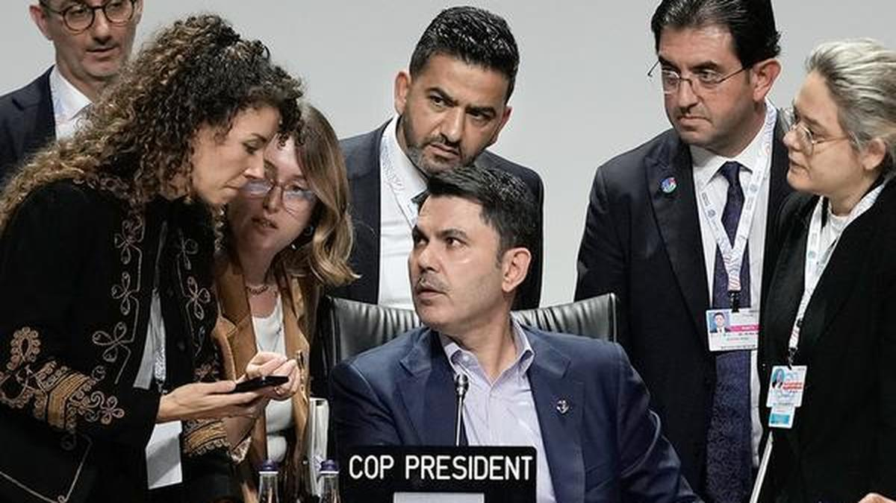

COP31 climate talks collapse after member states reject deal for not mentioning fossil fuels
Climate talks collapsed on Sunday at COP31 in Turkey, ending the longest ever United Nations climate summit with no deal to show for it.

Climate talks collapsed on Sunday at COP31 in Turkey, ending the longest ever United Nations climate summit with no deal to show for it.

Green Party Leader Emily Lowan and her caucus colleague Jeremy Valeriote will be sworn into office today at the legislature and Lowan has already set the tone for her tenure.

Canada has a three-ocean coastline — 243,000 kilometres — and only 20 underwater drones to help defend it. The navy's commander confirms there isn't a solution ready a year after an internal document shows top officials talked about the need for a short-term fix.
The COP31 summit in Antalya was the longest-running climate talks in UN history.
New draft text released at Cop31 summit after countries fail to agree on electrification and finance for developing world Climate talks reached a standstill on Saturday night in Turkey as some countries mulled whether to force a showdown with Saudi Arabia and its allies over the
Exclusive: Countries at Cop31 are being urged to commit to deriving 35% of their energy from electricity by 2035 China is pushing for rapid electrification of its economy using low-carbon energy and will help other countries do the same, a senior member of the Chinese delegation

In a year of unprecedented climate disasters, a supercharged El Niño and as the world heads inevitably past 1.5 °C of warming, the EU and other nations said that the international process did not meet the moment
Belirli bir şey mi arıyorsunuz? Tüm haberlerde ara.